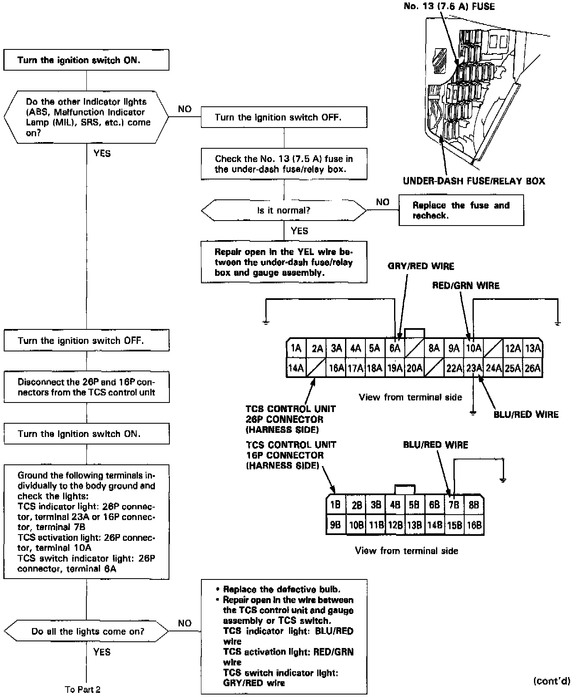
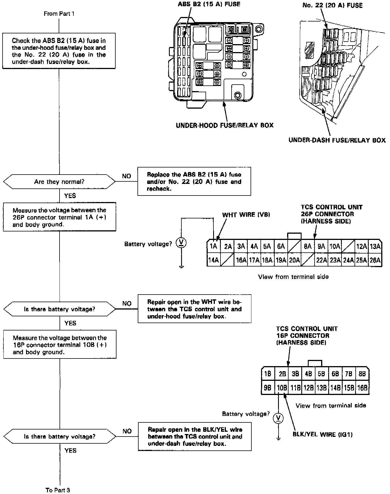
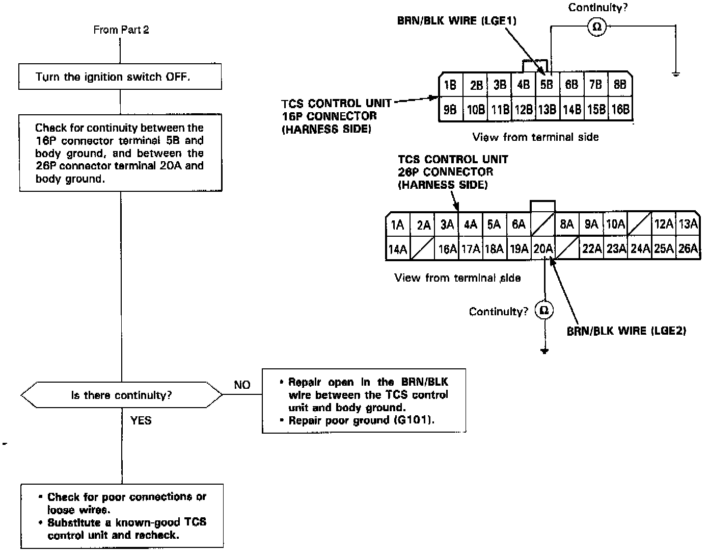

TCS Lights Do Not Come On



The TCS indicator light, TCS activation light and TCS switch indicator light do not come on for two seconds when the ignition switch is first turned on (no bulb check).
NOTE: The TCS indicator light stays on until the engine is started.